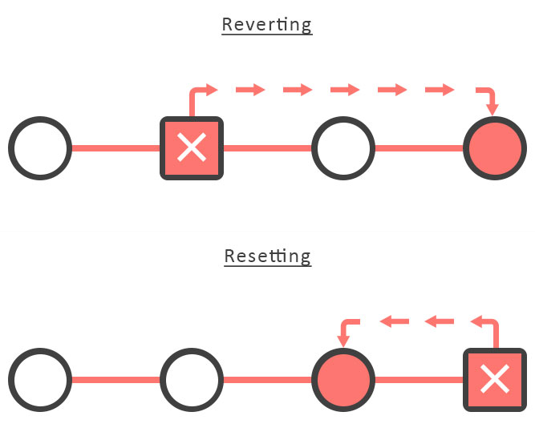
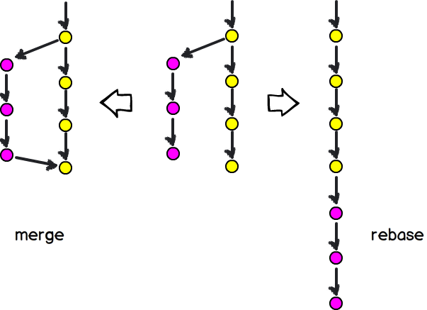

Chapter 2 Git
C:/Users/memy/OneDrive/Pulpit/1_Programs_and_programing/GIT/git_test/repo1
2.1 uwagi rozne
- Wystarczy podawać PIERWSZE 8 znakow nazwy commitu przy odwolywaniu sie do niego.
- Moze wystapic problem kiedy w pliku zostana zrobione zmiany w dwoch roznych programach (np. w samym Git i w Git pod Rstudio). Wtedy trzeba usunac odpowiedni plik poleceniem w konsoli Git.
- Dopoki katalog repozytorium jest pusty nie utworzy sie zaden branch !!!
2.2 logika git-a
Podstawowe elementy i czynnosci zwiazane z git-em

2.3 repozytoria
UTWORZENIE lokalnego repozytorium
git init # w katalogu w ktorym aktualnie przebywam zostanie utworzone lokalnie nowe repo git-aLISTA repozytoriow zdalnych
git remote -vDODANIE dla lokalnego repozytorium polaczenia do zdalnego repo na publicznym GitHubie.
git remote add origin git@github.com:USERNAME/REPOSITORY.gitZMIANA URL dla istniejącego polaczenia ze zdalnym repozytorium
git remote set-url origin git@github.com:USERNAME/REPOSITORY.git # 'origin' to bedzie nazwa polaczenia do ktorego bedziemy mogli sie potem odwolywac w komendachUSUNIECIE poloczenia do zdalnego repo ktore przy laczeniu nazwalismy ‘origin’
git remote rm origin # 'origin' musi byc wczesniej zdefiniwoaneWypchniecie zmian z lokalnego repo z brancha do repo zdalngo
# dla aktualnego brancha git push # dla aktulnego brancha z podaniem lokalizacji repo zdalnego i nazwy zdalnego brancha git push [nazwa-zdalnego-repo] [nazwa-gałęzi] # jezeli chce dla wszyskich branchow git push --allWypchniecie zmian z lokalnego repo z aktulanego brancha do repo zdalngo ZA PIERWSZYM RAZEM.
Za pierszym razem trzeba ustalic tzw. usptream-branch (Upstream branches define the branch tracked on the remote repository by your local remote branch (also called the remote tracking branch))
git push --set-upstream <remote> <branch>pobranie metadanych ze zdalnego repo o branchu np. w celach porownania z lokalnym repo
# dla aktualnego brancha git fetch # jezeli chce dla wszyskich branchow git fetch -aallPobranie metadanych o branchu ze zdalnego repo + wykonanie ‘merge’
# dla aktulnego brancha git pull # 'pull' wykonuje 'fetch' i 'merge' jednoczesnie. # jezeli chce dla wszyskich branchow git pull --allsklowanie zdalnego repo (zazwyczaj robi sie tylko na poczatku). Nie wiem czy klonuje wszystkie branche.
git clone
2.4 diff
Polecenie diff sluzy do porownywania plikow pomiedzy modyfikacjami.
Jakie dokładnie zmiany sa w plikach w stage wzgledem tego to jest przed poczekalnia.
git diffUwaga ‘diff’ nie wyswietli roznic polegajacych na tym ze dodano i nie wrzucono do poczekalni nowego pliku (pliki nie sledzone). ‘diff’ tylko porownuje pliki istniejace.
zmiany jakie sa w stage wzgledem poprzedniego commitu
git diff --stagedroznice miedzy branchami
git diff branch_1 branch_2zmiany w konkretnym commicie
git show hash_7roznice miedzy dwoma zadanymi commitami
git diff hash_7_1 hash_7_2roznica miedzy zadanym commitem i commitem na ktorym jest wskaznik (HEAD to miejsce po ostatnim commicie na branchy na ktory jestesmy)
git diff hash_7 HEAD
2.5 tracking
Nie wszystkie pliki ktore mamy w katalogu repozytorium muszę być śledzone przez git-a. W szczegolnosci nowo dodane pliki nie sa automatycznie sledzone.
Rozpoczecie sledzenie nowo dodanego pliku
git cp s1 s2 # dodalem plik 's2' kopiujac 's1' git status # dostaje komunikat ze plik jest niesledzony git add . # dodane plik do sledzeniaJeżeli chcemy aby jakis plik nie był sledzony na stale to dodajemy go do pliku .gitignore (patrz nastepny punkt manuala)
2.6 gitignore
-tworzenie pustego pliku (najszybsza metoda)
touch .gitignore
-zaladownie globalnego pliku glitignore (o nazwie ‘.gitignore_global’) waznego dla wszysktkich repozytoriow lokalnych.
git config --global core.excludesfile ~/.gitignore_global
problemy z sledzeniem plikow (git np. jakiegos ignoruje a nie powinien):
Czasami aby gitignore dzialal dobrze trzeba wyczyscic cache:
git rm -r --cached . git add . git commit -m ".gitignore is now working"Skladnia wewnatrz gitignore
ignoruj wszystkie pliki z rozszrzeniem ‘log’
*.logignoruj wszystkie pliki z rozszrzeniem ‘log’ z wyjatkiem ‘important.log’
*.log !important.logignoruj caly katalog ‘logs’
logs/Z katalogu ‘logs’ ignoruj tylko plik ‘debug.log’
logs/debug.logignoruj katalog ‘logs’ z wyjatkiem znajdujacego sie w nim pliku ‘important.log’
logs/ !logs/important.logignoruj wszystkie pliki i katalogi z wyjatkiem pliku ‘module.py’
* !module.pyReczne jednorazowe zawieszenie ignorowania pliku dla commitu
git add -f debug.log git commit -m "Force adding debug.log"
2.7 stage
Stage to poczelania. Tutaj przechowuje sie tymczasowo modyfikacje przed commit-em. Stage wystepuje tez pod innymi nazwami z literaturze: + Index + Cache + Directory cache + Current directory cache + Staging area + Staged files
cofniecie zmian z stage (poczekalni)
git reset HEAD nazwa_plikudodanie do stage wszystkich modyfikacji nie bedacych w poczekalni
git add .dodanie do stage modyfikacji w konkretnym pliku
git add naza_pliku
2.8 branches
Nie mylic branchow z repozytoriami !!!. Jedno repozytorium moze miec wiele branchow.
lista lokalnych branchow
git branchlista wszyskich branchow ( branche zdalne są na czerwowo)
git branch --allprzelaczenie sie na inny branch
git checkout <branch>utworzenie nowego brancha i przelaczenie sie na niego
git checkout -b <branch>utworzenie nowego brancha bez przelaczenie sie na niego
git branch <name_of_your_new_branch>usuniecie brancha (dwie metody)
git branch -d branch_name git branch -D branch_name- The -d option stands for –delete, which would delete the local branch, only if you have already pushed and merged it with your remote branches.
- The -D option stands for –delete –force, which deletes the branch regardless of its push and merge status, so be careful using this one!
usuniecie zdalnego brancha
git push <remote_name> --delete <branch_name>utworzenia zdalnego brancha w oparciu o lokalny: Najpierw tworzymy go lokalnie. A potem pushujemy odpowiednio.
Syntax: $ git push <REMOTE_NAME> <LOCAL_BRANCH_NAME>:<REMOTE_BRANCH_NAME> Command: $ git push origin stage1:developmentPrzykla ze strony: How to Create a Branch in Remote Git Repository
2.9 commits
2.9.1 podstawy
commit dla konkretnego pliku
git commit nazwa_pliku -m '.'add i commit w jednej komendzie
git commit -am "comment"lista commits (wiecej o funkcji log do wyswietlania commitoW jest dalej)
git logmodyfikacja do komentarza w ostatniej zmianie
git commit --amendWchodzę w VIM w tryb umozliwiajacy zmiany i poprawiam pierwsza linijke gdzie jest komentarz. Naciskam
i potem :wq i
2.9.2 funkcja log (wyswietla liste commitow)
lista commitow dla konkretnego pliku
git log nazwa_plikulista commitow dla konkretnego brancha (tutaj ‘master’)
git log masterlista ladnie sformatowana
git lot --decoratelista uproszczona jednolinijkowa per commit (dla bardziej zwiezlego i kompaktowego output)
git log --onelinelist commitow jako drzewo (przydaje sie kiedy jest wiele branchow, mergow itp.)
git log --graph --oneline --decoratePrzyklad output takiej drzewiastej listy:
* 0e25143 (HEAD, master) Merge branch 'feature' |\ | * 16b36c6 Fix a bug in the new feature | * 23ad9ad Start a new feature * | ad8621a Fix a critical security issue |/ * 400e4b7 Fix typos in the documentation * 160e224 Add the initial code baseCo widzimy powyżej: The asterisk shows which branch the commit was on, so the above graph tells us that the 23ad9ad and 16b36c6 commits are on a topic branch and the rest are on the master branch.
lista commitow z datami
git log --pretty=format:"%cn committed %h on %cd"lista commitow-filtrowanie:
ostatnie 3 commity
git log -3po dacie
git log --after="2014-7-1" git log --after="yesterday" git log --after="2014-7-1" --before="2014-7-4"po autorze:
git log --author="John"po autorze z uzyciem regex:
git log --author="John\|Mary"po message:
git log --grep="JRA-224:"po commitach dotyczacych tylko i wylacznie jedngo brancha (nie wyswietla commitow wspoldzielonych z innymi branchami):
git log master..featureNp jesli na poczatku byl tylko branch ‘master’, a potem wydzieli sie od niego nowy branch to ‘master..feature’ zwroci to co sie dzieje na masterze od czasu wydzielenia sie nowego brancha. To co jest przed podzialem jest wspolne dla obu branchy a nie jest unikatowe dla ‘master’, dlatego nie bedzie wyswietlone.
commity bedace mergami:
git log --merges
2.9.3 wskazniki
przesuniecie wskaznika na zadany commit (o nazwie ‘7eb01a3’) na branchu ‘master’ i potem powrot do HEAD
git checkout a7eb01a3 git checkout mastercofniecie wskaznika na stary commit (o nazwie 0d1d7fc32) i utworzenie od niego branch-a o nazwie ‘new_branch’
git checkout 0d1d7fc32 git checkout -b new_branchcofniecie zmian do zadanego commitu na danym branchu
git checkout master git reset --hard 1258f0d0aaeThis will destroy any local modifications. Don’t do it if you have uncommitted work you want to keep.
Alternatively, if there’s work to keep you can use ‘stash’:
git stash git reset --hard 0d1d7fc32 git stash popThis saves the modifications, then reapplies that patch after resetting. You could get merge conflicts, if you’ve modified things which were changed since the commit you reset to.
usuniecie ostatniego commitu (HAED to glowa drzewa commitow, czyli ostatni commit)
git reset HEADusuniecie 3 ostatanich commitow
git rebase HEAD~3usuniecie kilku commitow usuniecie 4 i 3 commitu (commmit 1 to commit pierwszy chyba)
git rebase --onto master~4 master~2 masterPowyzej celowo jest ‘master~2’ a nie ‘master~3’ mimo ze kasujemy od trzeciego commitu !!! . Niestety moga wystapic konflikty przy uzyciu ‘rabase’ takie jak przy mergowaniu. Wtedy trzeba postepowac zgodnie z instrukcjami wyswietlanymi przez git-a na ekranie. Pracuje się tak jak przy mergu. Czyli patrze na jakich plikach jest konflikt , potem zmieniam to recznie w plikach wedlug znaczników, potem daje git add
i potem git rebase –continue. W zmianach zatwierdzam to co jest ostatnie i chyba wtedy bedzie ok.
2.9.4 revert vs reset
revert vs reset (porownanie)
Let’s say you had commits:
C B A git revert B, will create a commit that undoes changes in B.
git revert A, will create a commit that undoes changes in A, but will not touch changes in B
Note that if changes in B are dependent on changes in A, the revert of A is not possible.
git reset –soft A, will change the commit history and repository; staging and working directory will still be at state of C.
git reset –mixed A, will change the commit history, repository, and staging; working directory will still be at state of C.
git reset –hard A, will change the commit history, repository, staging and working directory; you will go back to the state of A completely.
Podsumowujac w uproszczeniu. restet - cofam się o kilka commitow usuwajac je po drodze. revert - kopiuje na poczatek (jako HEAD) commit do ktorego stanu chcemy sie cofnac nie usuwajac commitow pomiedzy obecnym a tym do ktorego chcemy sie cofnac.

2.9.5 squash
Zlewanie kilku commitow w jeden
Przyklad
# zakladam ze mam kilka commitow git rebase -i HEAD~3 # bede zlewal 3 ostatnie commity. Niezbedne jest tutaj '-i' (tryb interaktywny) aby moc wykonac squash # po zatwierdzeniu powyzszego wyswietli mi sie vim # na w vim gorze bede mial liste moich commitow ze slowem 'pick' na poczkatku # tutaj robie edycje: # dla pierwszego commitu zostawiam 'pick' a dla dwoch nastepnych 'pick' zamieniam na 'squash' # wychodze zapsisujac zmiany: esc :wq # teraz wyswielti sie kolejny plik gdzie bede mial mozliwosc edytowania komentarza # w efekcie 3 cimmitu zlalem w jeden.
2.9.6 merge
zlaczenie brancha ‘prod’ do biezacego brancha
git merge prodsprawdzenie i rozwiazywanie konfliktow
Zeby zoabaczyc na jakich plikach sa konflikty (zakladam ze jestesmy w trakcie procesu mergowania):
git statusNastepnie w plikach mozna zobaczyc ze beda dodane nastepujace elemenenty:
Between the <<<<<<< and =======, you will find the version as per the changes in your current branch, relative to the base commit.
Between the ======= and >>>>>>>, you will find the version according to the other branch, relative to the base commit.
For convenience, after the <<<<<<< and >>>>>>> markers, you will see hints as to which commit that part of the conflict stems from, HEAD of course being the current revision.
Example:
++<<<<<<< HEAD ++abcgh ++======= ++abcdef ++>>>>>>> prod
Ustalamy jak ma wygladac wersja finalna pliku. Nastepnie bedac dalej w procesie mergowania robimy git add . i potem git commit -m’komentarz’ . Mergowania automatycznie sie zakonczy
zaprzestanie/przerwanie procesu mergowania
git merge -abort
2.9.7 rebase
‘rebase’ pelni funkcje podobna do ‘merge’, ale sa roznice:

Przyklad
# od mastera tworze nowy branch 'feature_master' i przlaczam sie na niego git checkout -b feature_branch master # na nowym branchu zatwierdzam jakas zmiane git commit git rebase master ( teraz na 'feature_master' mam baze z mastera, czyli mam wszystko co bylo w masterze od czasu wydzielenia 'feature_master' plus commity na 'feature' master od czasu tego wydzielenia). Uwaga: master jest jeszcze nie usuniety. git checkout master # przlaczenie na mastera git rebase feature_master # teraz master (zakladam ze w tym czasie nie bylo na nim zadnych zmian) zaciaga to co jest w feature_master ktory przestaje teraz istniec). Pelny rebase mastera ktory zostal przeprowadzony.dobry przyklad pokazjacy powyzsza operacje: https://www.youtube.com/watch?v=f1wnYdLEpgI (“A Better Git Workflow with Rebase” by The Modern Coder)
2.10 stash
Sluzy do przechowywaniu na boku w pamieci ostatnich niezacommitowanych zmian. Po przerzuceniu do stasha tych zmian nie widzimy ich (komenta ‘status’ niec nie zwroci), ale ponieważ sa przechowywane mozemy je przywrocic.
Pelny przyklad dzialania:
# wprowadzam zmiane tworzac plik s1 touch s1 git status # dostajemy informacje ze mamy niesledzony plik 's1'. git add . git status # teraz dostajemy informacje ze w poczekalni jest nowy plik do commitu. Tutaj mamy wiec nie zacommitowana zmiane, ktora wrzucimy do stasha. # zapisuje zmiane do stasha z komentarzem git stash save 'dodanie s1 do poczekalni' git status # dodanie pliku 's1' do poczekalni zostalo wrzucone do stasha. Mamy teraz dla 'status' komunikat taki sam jak przez uzyciem 'add' czyli jedynie informacje ze jest niesledzony plik 's1' # lista stash-ow git stash list # na liscie mamy jednego stasha z indeksem 0. Indeks zero ma zawsze najnowszy stash. git stash pop statsh@{0} # przywrocenia zawartosci ostatniego stasha i usuniecie go (kiedy przywracamy ostatniego nie musimy podawac jego nazwy, czyli w tym przypadku statsh{0}) git status # znowu dostajemy informacje ze w poczekalni jest nowy plik do commitu, czyli mamy przywrocone niezacommitowane zmiany.Uwaga: Po stworzeniu jednego stasha mozemy tworzyc kolejne. Najnowszy statsh ma zawsze indeks zero.
Uwaga: oprocz ‘stash pop’ jest jeszcze ‘stash apply’ ktory przywraca zawartosc ostatniego stasha ale go nie usuwa
git stash apply statsh@{0} # przywrocenia zawartosci ostatniego stasha bez uzuwania go.Usuwanie konretnego stasha
git stash drop statsh{0} # usuwam ostatniego stashaUsuwanie wszyskich stashow
git stash clear
2.11 Inne komendy
Czyszczenie cache
git rm -r -cached